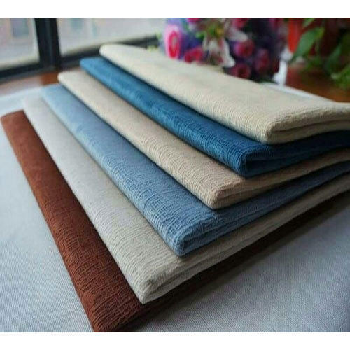
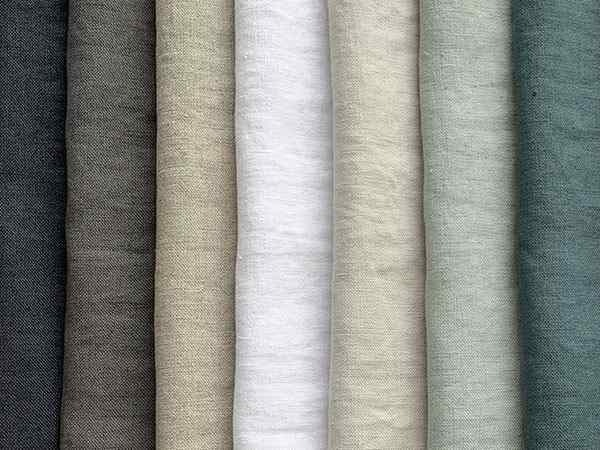

<!DOCTYPE html>
<html>
    <head>
        <title>Yaazh Tailors - Fabrics</title>
        <meta name="viewport" content="width=device-width, initial-scale=1.0">
        <link href="https://fonts.googleapis.com/css?family=Hind+Madurai&display=swap" rel="stylesheet">
        <link rel="stylesheet" href="style_fabrics.css">
        <meta name="Keywords" content="Yazzh Tailors , shirt tailor udumalpet, tailor udumalpet, suit tailor udumalpet, uniform tailor, uniform tailor udumalpet, school uniform, lab coat tailor, school uniform tailor, udumalpet tailor">
        <meta name="Description" content="Yaazh Tailors offers bespoke suits, blazers tailoring and men’s shirts, pants stitching at Udumalpet">
        <title>Yaazh Tailors Udumalpet | Specialist in Tailoring</title>
    </head>
</html>

<body>
    <section class="block1 nav_bar grid">
        <div class='name'>
            <h1>யாழ்</h1>
            <h2>Yaazh Tailors</h2>
        </div>
        <ul class='menu'>
            <li><a href=index.html class='home_link'>Home</a></li>
            <li><a href=tailoring.html class='tailoring_link'>Tailoring</a></li>
            <li><a href=fabrics.html class='fabrics_link'>Fabrics</a></li>
            <li><a href=status.html class='login_link'>Bill Status</a></li>
            <li><a href=status.html class='login_link'>Login</a></li>
            <li><a href=contact.html class='contact_link'>Contact Us</a></li>  
        </ul>
    </section>

    <section class="block2 main_image">
        
        <h2 class='quote'><i>"<span>Linen</span> is good because it looks trendy and at the same time it's very comfortable"</i></h2>
    </section>        

    <section class='block3'>
        <h2>Customize your Shirt and Pant with our Premium Linen Fabrics</h2>
        <div class='fab grid'>
            <p class="para_col">We offer premium linen fabrics for Shirts and pants at discounted price. You can pick your unique style from our collection of natural and luxurious linen in different shades, patterns, prints and textures.</p>       
        </div>
    </section>

    <section class='block4'>
        <h2>Premium Linen Shirting Fabrics</h2>
        <div class='shirting grid'>
            <p class="para_col">Linen shirts are more comfortable than cotton shirts interms of ventilation, breathability, comfort, liquid absorption and moisture management while still being able to retain heat.
            Shirts made up of linen look more elegant. Choose from variety of linen fabrics and tailor it according to your style. </p>  
            
            
        </div>
    </section>

    <section class='block5'>
        <h2>Premium Linen White Fabrics</h2>
        <div class='white grid'>
            <p class="para_col">White linen shirts look cool, feel comfortable and great for summer. It gives elite look. Choose from variety of white linen fabrics and tailor it. </p>       
            
            
        </div>
    </section>

    <section class='block6'>
        <h2>Premium Linen Trouser Fabrics</h2>
        <div class='trouser grid'>
            <p class="para_col">Linen is more comfortable than cotton interms of ventilation, breathability, comfort, liquid absorption and moisture management while still being able to retain heat.
                Choose from variety of trouser linen fabrics and tailor it according to your fit.</p>
                
            
        </div>
    </section>

    <section class='block7'>
        <p>Quality Assured</p>
        <p>33 years of excellence</p>
        <p>1000's of trusted coustomers</p>
    </section>

    <section class='block8 grid'>
        <div class='fot_col1'>
            <h1>யாழ்</h1>
            <h2>Yaazh Tailors</h2>
            <p>Yaazh Tailors offers bespoke suits, sherwani, blazers tailoring and men’s shirts, pants stitching at Udumalpet. Started in 1988, Yaazh tailors, Udumalpet has been offering high quality clothes tailoring, bespoke mens wear for more than 32 years.</p>
        </div>

        <div class='fot_col2'>
            <h2>Important Links</h2>
            <ul>
                <li><a href=index.html class='home_link'>Home</a></li>
                <li><a href=tailoring.html class='home_link'></a>Tailoring</li>
                <li><a href=fabrics.html class='home_link'></a>Fabrics</li>
                <li><a href=status.html class='home_link'></a>Bill Status</li>
                <li><a href=login_page.html class='home_link'></a>Login</li>
                <li><a href=contact.html class='home_link'></a>Contact Us</li>
            </ul>
        </div>

        <div class='fot_col3'>
            <h3>Contact</h3>
            <p>1, V.O.C Street<br>
                Udumalpet-642126<br>
                Tiruppur District<br>
                Tamilnadu<br><br>
                <span>Phone:</span> 04252-225129<br>
                <span>Mobile:</span> +91 9578617821<br>
                <span>Email:</span> yaazh_tailors_udt@gmail.com<br><br></p>
            <div class='social_widget'>
                <h4 class= "social_media">Social Media</h4><br>
                <a href="https://www.facebook.com" class="social_icon">
                    
                </a>
                <a href="https://maps.app.goo.gl/pr1FsM5396j11rTh7" class="social_icon">
                    
                </a>
            </div>
        </div>
    </section>

    <footer>
        <div class="copyright">
            <p>Copyrights © 2021-22 Yaazh Tailors. All Rights Reserved.</p>
            <p>Designed and maintained by Yazharasu A</p>
        </div>
    </footer>

</body>

